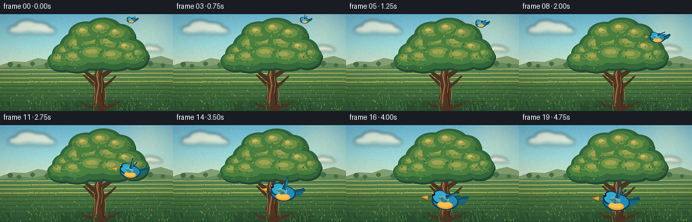
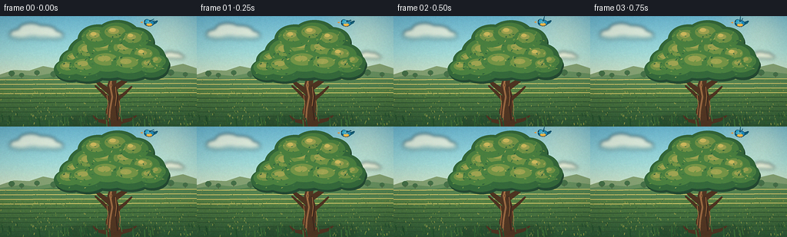
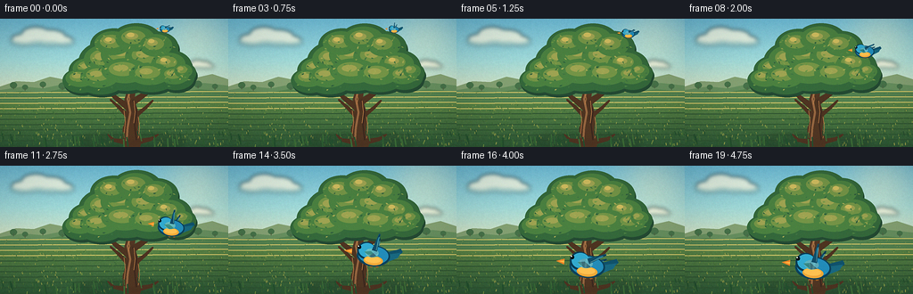
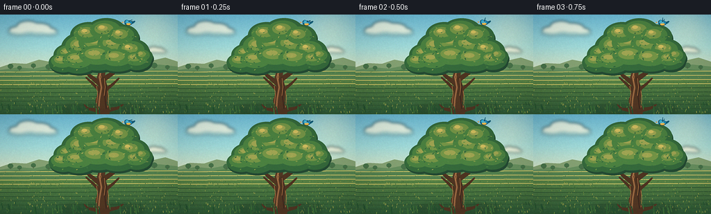

CODING AGENTS AS PIXEL WORLD MODELS
traex/DeepSeek-V4.1-Flash · dynamic_spatial_relationship_0046
点击播放 · 原生 RGB 像素
逐轮保存的候选
回放视频、检查图与代码变化。
每份候选均可单独播放。实际图片检查记录在下方工具轨迹中。
候选 01播放与检查图
点击播放 · 原生 RGB 像素


展开代码变化
--- 上一保存版本
+++ 本次保存版本
@@ -0,0 +1,592 @@
+from __future__ import annotations
+
+import math
+import random
+from pathlib import Path
+
+import numpy as np
+from PIL import Image, ImageDraw, ImageFilter
+
+import artifact_io
+
+
+WIDTH = 256
+HEIGHT = 144
+FRAME_COUNT = 20
+FPS = 4.0
+SS = 4
+
+
+def pt(x: float, y: float) -> tuple[int, int]:
+ return round(x * SS), round(y * SS)
+
+
+def box(values: tuple[float, float, float, float]) -> tuple[int, int, int, int]:
+ return tuple(round(value * SS) for value in values) # type: ignore[return-value]
+
+
+def polygon(
+ draw: ImageDraw.ImageDraw,
+ points: list[tuple[float, float]],
+ fill,
+ outline=None,
+ width: float = 1.0,
+) -> None:
+ draw.polygon([pt(x, y) for x, y in points], fill=fill, outline=outline, width=round(width * SS))
+
+
+def ellipse(
+ draw: ImageDraw.ImageDraw,
+ bounds: tuple[float, float, float, float],
+ fill,
+ outline=None,
+ width: float = 1.0,
+) -> None:
+ draw.ellipse(box(bounds), fill=fill, outline=outline, width=round(width * SS))
+
+
+def line(
+ draw: ImageDraw.ImageDraw,
+ points: list[tuple[float, float]],
+ fill,
+ width: float = 1.0,
+ joint: str = "curve",
+) -> None:
+ draw.line([pt(x, y) for x, y in points], fill=fill, width=round(width * SS), joint=joint)
+
+
+def blend(base: Image.Image, overlay: Image.Image, alpha: float = 1.0) -> Image.Image:
+ if alpha < 1.0:
+ overlay = overlay.copy()
+ overlay.putalpha(overlay.getchannel("A").point(lambda value: round(value * alpha)))
+ result = base.convert("RGBA")
+ result.alpha_composite(overlay)
+ return result.convert("RGB")
+
+
+def vertical_palette(stops: list[tuple[float, tuple[int, int, int]]], height: int) -> np.ndarray:
+ ys = np.linspace(0.0, 1.0, height)
+ positions = np.array([item[0] for item in stops])
+ colors = np.array([item[1] for item in stops], dtype=np.float32)
+ output = np.empty((height, 3), dtype=np.float32)
+ for channel in range(3):
+ output[:, channel] = np.interp(ys, positions, colors[:, channel])
+ return output
+
+
+def make_background() -> Image.Image:
+ rng = random.Random(1701)
+ h = HEIGHT * SS
+ w = WIDTH * SS
+
+ sky = vertical_palette(
+ [
+ (0.00, (105, 181, 207)),
+ (0.32, (157, 213, 212)),
+ (0.63, (225, 224, 183)),
+ (1.00, (249, 226, 169)),
+ ],
+ h,
+ )
+ ground = vertical_palette(
+ [
+ (0.00, (188, 193, 107)),
+ (0.30, (139, 162, 84)),
+ (0.68, (83, 124, 66)),
+ (1.00, (44, 86, 53)),
+ ],
+ h,
+ )
+ horizon = round(79 / HEIGHT * h)
+ pixels = np.empty((h, w, 3), dtype=np.float32)
+ pixels[:horizon] = sky[:horizon, None, :]
+ pixels[horizon:] = ground[horizon:, None, :]
+
+ yy, xx = np.mgrid[0:h, 0:w]
+ sun_x, sun_y = 219 * SS, 22 * SS
+ distance = ((xx - sun_x) ** 2 + (yy - sun_y) ** 2) / float((57 * SS) ** 2)
+ glow = np.exp(-distance * 2.1)
+ sun_color = np.array((255.0, 242.0, 190.0), dtype=np.float32)
+ pixels = pixels * (1.0 - glow[..., None] * 0.34) + sun_color * glow[..., None] * 0.34
+
+ # Fine atmospheric grain keeps the broad gradients from banding.
+ grain = np.array(
+ Image.fromarray(
+ np.array(
+ [[rng.randrange(256) for _ in range(WIDTH)] for _ in range(HEIGHT)],
+ dtype=np.uint8,
+ )
+ ).resize((w, h), Image.Resampling.BILINEAR),
+ dtype=np.float32,
+ )
+ pixels += (grain[..., None] - 127.5) * 0.035
+ image = Image.fromarray(np.clip(pixels, 0, 255).astype(np.uint8))
+ draw = ImageDraw.Draw(image)
+
+ # Hazy, layered hills establish distance behind the main tree.
+ polygon(
+ draw,
+ [(0, 76), (18, 70), (38, 71), (56, 65), (76, 69), (99, 64), (121, 70),
+ (145, 66), (167, 69), (191, 63), (216, 67), (238, 62), (256, 68), (256, 84), (0, 84)],
+ (129, 157, 112),
+ )
+ polygon(
+ draw,
+ [(0, 80), (26, 76), (48, 78), (73, 73), (97, 77), (123, 72), (148, 75),
+ (175, 71), (201, 76), (229, 72), (256, 75), (256, 88), (0, 88)],
+ (100, 139, 92),
+ )
+ polygon(
+ draw,
+ [(0, 84), (24, 81), (45, 83), (68, 79), (92, 83), (117, 80), (143, 82),
+ (171, 78), (196, 83), (224, 79), (256, 82), (256, 94), (0, 94)],
+ (82, 126, 77),
+ )
+
+ # Distant orchard silhouettes add scale without competing with the hero tree.
+ for x, y, scale in [
+ (15, 76, 1.0), (28, 78, 0.8), (48, 75, 0.9), (70, 77, 1.1),
+ (88, 75, 0.7), (202, 76, 0.9), (222, 75, 1.1), (241, 77, 0.8),
+ ]:
+ ellipse(draw, (x - 4 * scale, y - 5 * scale, x + 4 * scale, y + 2 * scale), (69, 111, 71))
+ line(draw, [(x, y), (x, y + 3)], (76, 94, 62), 0.8)
+
+ # Warm field bands and thousands of short strokes give the meadow depth.
+ for row in range(83, 145, 6):
+ alpha_color = (202, 192, 102) if row < 105 else (46, 83, 49)
+ line(draw, [(0, row), (256, row - 1.5)], (*alpha_color, 34), 1.2)
+ for _ in range(540):
+ x = rng.uniform(0, WIDTH)
+ y = rng.uniform(82, HEIGHT)
+ depth = (y - 82) / (HEIGHT - 82)
+ length = 0.5 + depth * 2.2
+ lean = rng.uniform(-0.45, 0.45)
+ color = rng.choice([(72, 111, 55), (109, 139, 63), (55, 96, 52), (151, 157, 73)])
+ line(draw, [(x, y), (x + lean, y - length)], (*color, 110), 0.55 + depth * 0.35)
+
+ # Soft clouds, with warm undersides and diffuse edges.
+ cloud = Image.new("RGBA", (w, h), (0, 0, 0, 0))
+ cloud_draw = ImageDraw.Draw(cloud)
+ for x, y, size in [(47, 24, 1.0), (122, 38, 0.58), (224, 53, 0.45)]:
+ for dx, dy, rx, ry in [
+ (-19, 1, 17, 6), (-6, -3, 18, 9), (10, 0, 20, 7), (24, 2, 13, 5)
+ ]:
+ ellipse(
+ cloud_draw,
+ (x + dx * size - rx * size, y + dy * size - ry * size,
+ x + dx * size + rx * size, y + dy * size + ry * size),
+ (193, 194, 169, 74),
+ )
+ for dx, dy, rx, ry in [
+ (-20, -2, 14, 5), (-7, -7, 16, 8), (8, -5, 18, 7), (22, -1, 12, 4)
+ ]:
+ ellipse(
+ cloud_draw,
+ (x + dx * size - rx * size, y + dy * size - ry * size,
+ x + dx * size + rx * size, y + dy * size + ry * size),
+ (255, 248, 222, 180),
+ )
+ cloud = cloud.filter(ImageFilter.GaussianBlur(2.2 * SS))
+ image = blend(image, cloud)
+
+ # A few flowers in the near meadow lead the eye toward the bird's landing.
+ flower_rng = random.Random(914)
+ for _ in range(38):
+ x = flower_rng.uniform(5, 251)
+ y = flower_rng.uniform(103, 139)
+ if 112 < x < 190 and y > 120:
+ continue
+ radius = flower_rng.uniform(0.7, 1.35)
+ petal = flower_rng.choice([(247, 230, 173), (235, 203, 116), (224, 173, 126)])
+ for angle in range(0, 360, 72):
+ rad = math.radians(angle)
+ ellipse(
+ draw,
+ (x + math.cos(rad) * radius - radius * 0.62,
+ y + math.sin(rad) * radius - radius * 0.62,
+ x + math.cos(rad) * radius + radius * 0.62,
+ y + math.sin(rad) * radius + radius * 0.62),
+ (*petal, 205),
+ )
+ ellipse(draw, (x - 0.55, y - 0.55, x + 0.55, y + 0.55), (164, 104, 47, 230))
+
+ return image
+
+
+CLUSTERS = [
+ (102, 58, 25, 17),
+ (119, 48, 31, 23),
+ (141, 43, 35, 26),
+ (166, 45, 32, 24),
+ (190, 53, 25, 18),
+ (128, 30, 27, 19),
+ (153, 25, 29, 20),
+ (176, 32, 24, 18),
+ (91, 69, 21, 14),
+ (113, 67, 28, 18),
+ (141, 61, 34, 20),
+ (169, 64, 30, 18),
+ (197, 66, 21, 14),
+ (207, 61, 13, 11),
+]
+
+
+def make_leaf_data() -> list[tuple[float, float, float, float, float, tuple[int, int, int]]]:
+ rng = random.Random(441)
+ leaves = []
+ palette = [
+ (44, 91, 58),
+ (60, 111, 63),
+ (77, 128, 66),
+ (101, 143, 67),
+ (126, 151, 73),
+ (159, 164, 82),
+ ]
+ for cx, cy, rx, ry in CLUSTERS:
+ for _ in range(10):
+ angle = rng.uniform(0, math.tau)
+ radius = math.sqrt(rng.random()) * 0.82
+ x = cx + math.cos(angle) * rx * radius
+ y = cy + math.sin(angle) * ry * radius
+ leaves.append(
+ (
+ x,
+ y,
+ rng.uniform(-1.2, 1.2),
+ rng.uniform(1.1, 2.1),
+ rng.uniform(0.55, 0.9),
+ rng.choice(palette),
+ )
+ )
+ return leaves
+
+
+LEAVES = make_leaf_data()
+
+
+def leaf_polygon(x: float, y: float, angle: float, length: float, width: float):
+ points = []
+ for local_x, local_y in [
+ (-length, 0), (-length * 0.25, -width), (length, 0),
+ (-length * 0.25, width),
+ ]:
+ points.append(
+ (
+ x + local_x * math.cos(angle) - local_y * math.sin(angle),
+ y + local_x * math.sin(angle) + local_y * math.cos(angle),
+ )
+ )
+ return points
+
+
+def tapered_limb(
+ draw: ImageDraw.ImageDraw,
+ points: list[tuple[float, float]],
+ widths: list[float],
+ fill,
+) -> None:
+ left = []
+ right = []
+ for index, (x, y) in enumerate(points):
+ if index == 0:
+ dx = points[1][0] - x
+ dy = points[1][1] - y
+ elif index == len(points) - 1:
+ dx = x - points[index - 1][0]
+ dy = y - points[index - 1][1]
+ else:
+ dx = points[index + 1][0] - points[index - 1][0]
+ dy = points[index + 1][1] - points[index - 1][1]
+ length = max(math.hypot(dx, dy), 0.001)
+ nx, ny = -dy / length, dx / length
+ half = widths[index] * 0.5
+ left.append((x + nx * half, y + ny * half))
+ right.append((x - nx * half, y - ny * half))
+ polygon(draw, left + list(reversed(right)), fill)
+ for (x, y), width in zip(points, widths):
+ ellipse(draw, (x - width * 0.5, y - width * 0.5, x + width * 0.5, y + width * 0.5), fill)
+
+
+def draw_tree(image: Image.Image, time_seconds: float) -> None:
+ draw = ImageDraw.Draw(image)
+ sway_global = 0.45 * math.sin(time_seconds * 1.25)
+
+ # Ground shadow and roots anchor the tree.
+ shadow = Image.new("RGBA", image.size, (0, 0, 0, 0))
+ shadow_draw = ImageDraw.Draw(shadow)
+ ellipse(shadow_draw, (84, 129, 208, 145), (32, 59, 38, 92))
+ shadow = shadow.filter(ImageFilter.GaussianBlur(3.2 * SS))
+ image.alpha_composite(shadow) if image.mode == "RGBA" else None
+
+ tapered_limb(
+ draw,
+ [(148, 139), (146, 124), (149, 108), (145, 91), (148, 77)],
+ [20, 17, 14, 11, 9],
+ (79, 53, 34),
+ )
+ tapered_limb(
+ draw,
+ [(145, 139), (127, 136), (121, 130)],
+ [7, 4, 1.5],
+ (76, 51, 33),
+ )
+ tapered_limb(
+ draw,
+ [(150, 139), (169, 135), (177, 130)],
+ [7, 4, 1.5],
+ (76, 51, 33),
+ )
+ branches = [
+ ([(147, 102), (130, 89), (117, 77)], [8, 5, 2.5]),
+ ([(148, 94), (166, 82), (181, 70)], [8, 5, 2.5]),
+ ([(146, 112), (133, 99), (124, 91)], [6, 3.8, 2]),
+ ([(149, 111), (163, 100), (171, 92)], [6, 3.5, 1.8]),
+ ]
+ for points, widths in branches:
+ tapered_limb(draw, points, widths, (75, 50, 32))
+
+ # Bark highlights and grooves follow the trunk's slight bend.
+ line(draw, [(142, 137), (143, 122), (146, 105), (143, 90), (146, 80)], (145, 99, 62, 190), 2.2)
+ line(draw, [(153, 136), (151, 119), (153, 104), (149, 91)], (58, 39, 29, 180), 1.5)
+ for x, y0, y1 in [(139, 103, 129), (150, 92, 117), (155, 110, 134), (144, 84, 96)]:
+ line(draw, [(x, y0), (x + 1.5, (y0 + y1) * 0.5), (x, y1)], (176, 118, 68, 120), 0.7)
+
+ # A dark underpainting unifies the canopy before the smaller leaf clusters.
+ for cx, cy, rx, ry in CLUSTERS:
+ sway = sway_global * ((cy - 18) / 52)
+ ellipse(
+ draw,
+ (cx - rx + sway + 1.4, cy - ry + 3.2, cx + rx + sway + 1.4, cy + ry + 3.2),
+ (35, 72, 49),
+ )
+
+ for cx, cy, rx, ry in CLUSTERS:
+ sway = sway_global * ((cy - 18) / 52)
+ bob = 0.24 * math.sin(time_seconds * 1.8 + cx * 0.08)
+ ellipse(draw, (cx - rx + sway, cy - ry + bob, cx + rx + sway, cy + ry + bob), (51, 101, 57))
+
+ # Layered crowns give the foliage the irregular silhouette of a painted tree.
+ for cx, cy, rx, ry in CLUSTERS:
+ sway = sway_global * ((cy - 18) / 52)
+ bob = 0.24 * math.sin(time_seconds * 1.8 + cx * 0.08)
+ ellipse(
+ draw,
+ (cx - rx * 0.76 + sway - 1.5, cy - ry * 0.72 + bob - 2.1,
+ cx + rx * 0.77 + sway - 1.5, cy + ry * 0.68 + bob - 2.1),
+ (72, 124, 62),
+ )
+ ellipse(
+ draw,
+ (cx - rx * 0.48 + sway - 3.0, cy - ry * 0.44 + bob - 3.4,
+ cx + rx * 0.45 + sway - 3.0, cy + ry * 0.34 + bob - 3.4),
+ (112, 143, 68),
+ )
+ ellipse(
+ draw,
+ (cx - rx * 0.29 + sway - 4.1, cy - ry * 0.25 + bob - 4.2,
+ cx + rx * 0.20 + sway - 4.1, cy + ry * 0.12 + bob - 4.2),
+ (153, 158, 79),
+ )
+
+ for x, y, angle, length, width, color in LEAVES:
+ cx = min(CLUSTERS, key=lambda item: (item[0] - x) ** 2 + (item[1] - y) ** 2)
+ sway = sway_global * ((cx[1] - 18) / 52)
+ flutter = 0.10 * math.sin(time_seconds * 2.2 + x * 0.09 + y * 0.05)
+ polygon(
+ draw,
+ leaf_polygon(x + sway, y + flutter, angle + flutter, length, width),
+ color,
+ )
+
+ # Warm light catches the upper-left edge of the canopy.
+ for cx, cy, rx, ry in CLUSTERS[4:8]:
+ sway = sway_global * 0.35
+ ellipse(
+ draw,
+ (cx - rx * 0.16 + sway - 6, cy - ry * 0.23 - 5,
+ cx + rx * 0.12 + sway - 6, cy + ry * 0.02 - 5),
+ (199, 181, 91, 105),
+ )
+
+
+def rotate_vector(x: float, y: float, angle: float) -> tuple[float, float]:
+ return x * math.cos(angle) - y * math.sin(angle), x * math.sin(angle) + y * math.cos(angle)
+
+
+def make_bird_sprite(phase: float) -> Image.Image:
+ scale = 7
+ sprite_w, sprite_h = 110 * scale, 92 * scale
+ origin_x, origin_y = 56 * scale, 52 * scale
+ image = Image.new("RGBA", (sprite_w, sprite_h), (0, 0, 0, 0))
+ draw = ImageDraw.Draw(image)
+
+ def bp(x: float, y: float) -> tuple[int, int]:
+ return round(origin_x + x * scale), round(origin_y + y * scale)
+
+ def bpoly(points, fill):
+ draw.polygon([bp(x, y) for x, y in points], fill=fill)
+
+ def bellipse(bounds, fill):
+ draw.ellipse(tuple(round(origin_x + value * scale) if index % 2 == 0 else round(origin_y + value * scale)
+ for index, value in enumerate(bounds)), fill=fill)
+
+ def bline(points, fill, width):
+ draw.line([bp(x, y) for x, y in points], fill=fill, width=round(width * scale), joint="curve")
+
+ front_angle = 0.72 * math.sin(phase)
+ back_angle = 0.58 * math.sin(phase + 0.55)
+
+ def wing(shoulder, angle, root_color, mid_color, tip_color, size=1.0):
+ sx, sy = shoulder
+ vx, vy = rotate_vector(20 * size, -25 * size, angle)
+ length = math.hypot(vx, vy)
+ nx, ny = -vy / length, vx / length
+ root = 4.8 * size
+ tip = 1.4 * size
+ p0 = (sx + nx * root, sy + ny * root)
+ p1 = (sx - nx * root, sy - ny * root)
+ p2 = (sx + vx - nx * tip, sy + vy - ny * tip)
+ p3 = (sx + vx + nx * tip, sy + vy + ny * tip)
+ bpoly([p0, p1, p2, p3], root_color)
+ mid_x = sx + vx * 0.62
+ mid_y = sy + vy * 0.62
+ bpoly(
+ [
+ (sx + nx * root * 0.7, sy + ny * root * 0.7),
+ (mid_x + nx * root * 0.45, mid_y + ny * root * 0.45),
+ (sx + vx * 0.91, sy + vy * 0.91),
+ (mid_x - nx * root * 0.12, mid_y - ny * root * 0.12),
+ ],
+ mid_color,
+ )
+ bpoly(
+ [
+ (sx + vx * 0.74 + nx * 2.6, sy + vy * 0.74 + ny * 2.6),
+ (sx + vx + nx * 0.2, sy + vy + ny * 0.2),
+ (sx + vx * 0.82 - nx * 0.4, sy + vy * 0.82 - ny * 0.4),
+ ],
+ tip_color,
+ )
+ bline(
+ [(sx + vx * 0.08 + nx * 2.8, sy + vy * 0.08 + ny * 2.8),
+ (sx + vx * 0.84 + nx * 1.2, sy + vy * 0.84 + ny * 1.2)],
+ (99, 190, 205, 175),
+ 0.9,
+ )
+
+ # Rear wing, tail, and tucked legs sit behind the body.
+ wing((4, -4), back_angle, (16, 68, 91, 255), (24, 91, 116, 255), (9, 47, 68, 255), 0.88)
+ bpoly([(13, -4), (47, -16), (51, -10), (43, -2), (26, 9)], (16, 80, 105, 255))
+ bpoly([(22, -3), (48, -9), (43, 1), (27, 9)], (24, 102, 126, 255))
+ bpoly([(5, 10), (10, 21), (6, 22), (0, 12)], (143, 92, 41, 255))
+ bpoly([(-5, 11), (-1, 22), (-5, 22), (-9, 12)], (143, 92, 41, 255))
+
+ # Body and head use a dark rim under saturated fills for readability at small sizes.
+ bellipse((-31, -18, 29, 20), (12, 66, 91, 255))
+ bellipse((-28, -16, 26, 16), (34, 137, 181, 255))
+ bellipse((-31, -23, 2, 8), (9, 60, 84, 255))
+ bellipse((-28, -21, 2, 5), (49, 165, 201, 255))
+ bellipse((-18, 1, 17, 18), (237, 166, 57, 255))
+ bellipse((-16, 2, 13, 14), (250, 190, 79, 255))
+ bellipse((-16, -12, 8, 4), (92, 190, 211, 210))
+
+ # Beak, eye, and a small crown feather make the bird's direction unmistakable.
+ bpoly([(-40, -9), (-54, -4), (-40, 1)], (226, 128, 37, 255))
+ bpoly([(-40, -6), (-50, -4), (-40, -2)], (255, 176, 65, 255))
+ bellipse((-31, -16, -24, -9), (5, 23, 28, 255))
+ bellipse((-30.1, -15.2, -27.9, -12.7), (245, 249, 226, 255))
+ bellipse((-27.8, -14.4, -26.8, -13.3), (8, 27, 32, 255))
+
+ # Front wing overlaps the torso and carries most of the flap motion.
+ wing((0, -8), front_angle, (17, 75, 101, 255), (33, 120, 148, 255), (10, 56, 78, 255), 1.0)
+ bpoly([(-18, -5), (-6, -7), (6, 2), (-5, 4)], (45, 151, 180, 150))
+
+ return image
+
+
+def bird_path(index: int) -> tuple[float, float, float]:
+ if index <= 2:
+ x = 194.0 + 0.55 * math.sin(index * 1.1)
+ y = 7.4 + 0.55 * math.sin(index * 1.35 + 0.4)
+ scale = 0.42
+ return x, y, scale
+
+ u = min((index - 2) / 15.0, 1.0)
+ u = u * u * (3.0 - 2.0 * u)
+ p0 = (194.0, 7.4)
+ p1 = (214.0, 22.0)
+ p2 = (211.0, 68.0)
+ p3 = (144.5, 110.0)
+ one = 1.0 - u
+ x = one**3 * p0[0] + 3 * one**2 * u * p1[0] + 3 * one * u**2 * p2[0] + u**3 * p3[0]
+ y = one**3 * p0[1] + 3 * one**2 * u * p1[1] + 3 * one * u**2 * p2[1] + u**3 * p3[1]
+ scale = 0.42 + 0.86 * u
+ return x, y, scale
+
+
+def draw_bird(image: Image.Image, index: int) -> None:
+ x, y, size = bird_path(index)
+ phase = 0.55 + index * 1.58
+ sprite = make_bird_sprite(phase)
+
+ target_w = round(58.0 * size * SS)
+ target_h = round(target_w * sprite.height / sprite.width)
+ sprite = sprite.resize((target_w, target_h), Image.Resampling.LANCZOS)
+
+ if index >= 11:
+ sprite = sprite.rotate(-5.0, resample=Image.Resampling.BICUBIC, expand=True)
+
+ left = round(x * SS - sprite.width / 2)
+ top = round(y * SS - sprite.height / 2)
+ image.alpha_composite(sprite, (left, top))
+
+
+def draw_foreground_grass(image: Image.Image, time_seconds: float) -> None:
+ draw = ImageDraw.Draw(image)
+ rng = random.Random(2803)
+ for _ in range(62):
+ x = rng.uniform(0, WIDTH)
+ y = rng.uniform(128, 148)
+ depth = (y - 128) / 20
+ length = 3.5 + depth * 9
+ sway = math.sin(time_seconds * 1.9 + x * 0.11) * (0.4 + depth * 0.7)
+ width = 0.7 + depth * 1.2
+ color = rng.choice([(35, 78, 45), (45, 91, 49), (59, 105, 54)])
+ line(draw, [(x, y), (x + sway - 1.2, y - length)], (*color, 230), width)
+
+
+def postprocess(image: Image.Image, index: int) -> np.ndarray:
+ arr = np.asarray(image.convert("RGB"), dtype=np.float32)
+ yy, xx = np.mgrid[0:HEIGHT, 0:WIDTH]
+ nx = (xx - WIDTH * 0.51) / (WIDTH * 0.62)
+ ny = (yy - HEIGHT * 0.52) / (HEIGHT * 0.72)
+ vignette = np.clip(1.04 - 0.13 * (nx * nx + ny * ny), 0.88, 1.04)
+ arr *= vignette[..., None]
+ rng = np.random.default_rng(800 + index)
+ arr += rng.normal(0.0, 1.35, arr.shape)
+ return np.clip(arr, 0, 255).astype(np.uint8)
+
+
+def render() -> np.ndarray:
+ background = make_background()
+ frames = []
+ for index in range(FRAME_COUNT):
+ time_seconds = index / FPS
+ frame = background.convert("RGBA")
+ draw_tree(frame, time_seconds)
+ draw_foreground_grass(frame, time_seconds)
+ draw_bird(frame, index)
+ frame = frame.convert("RGB").resize((WIDTH, HEIGHT), Image.Resampling.LANCZOS)
+ frame = frame.filter(ImageFilter.UnsharpMask(radius=0.6, percent=42, threshold=2))
+ frames.append(postprocess(frame, index))
+ return np.stack(frames, axis=0)
+
+
+def main() -> None:
+ case_dir = Path(__file__).resolve().parent
+ frames = render()
+ artifact_io.save(frames, case_dir)
+
+
+if __name__ == "__main__":
+ main()
候选 02播放与检查图
点击播放 · 原生 RGB 像素


展开代码变化
--- 上一保存版本
+++ 本次保存版本
@@ -506,21 +506,21 @@
def bird_path(index: int) -> tuple[float, float, float]:
if index <= 2:
- x = 194.0 + 0.55 * math.sin(index * 1.1)
- y = 7.4 + 0.55 * math.sin(index * 1.35 + 0.4)
- scale = 0.42
+ x = 185.0 + 0.45 * math.sin(index * 1.1)
+ y = 10.5 + 0.45 * math.sin(index * 1.35 + 0.4)
+ scale = 0.36
return x, y, scale
u = min((index - 2) / 15.0, 1.0)
u = u * u * (3.0 - 2.0 * u)
- p0 = (194.0, 7.4)
- p1 = (214.0, 22.0)
+ p0 = (185.0, 10.5)
+ p1 = (213.0, 24.0)
p2 = (211.0, 68.0)
p3 = (144.5, 110.0)
one = 1.0 - u
x = one**3 * p0[0] + 3 * one**2 * u * p1[0] + 3 * one * u**2 * p2[0] + u**3 * p3[0]
y = one**3 * p0[1] + 3 * one**2 * u * p1[1] + 3 * one * u**2 * p2[1] + u**3 * p3[1]
- scale = 0.42 + 0.86 * u
+ scale = 0.36 + 0.92 * u
return x, y, scale
可观测工具轨迹
实际执行的命令与返回图片。
命令 1exit 0
/bin/bash -c "pwd && rg --files -g 'prompt.txt' -g 'GENERATION_RULES.md' -g 'task_spec.json' -g '"'!*.mp4'"' -g '"'!*.png'"'"
命令 2exit 0
/bin/bash -c 'git status --short'
命令 3exit 0
/bin/bash -c 'ls -la'
命令 4exit 0
/bin/bash -c 'cat prompt.txt'
命令 5exit 0
/bin/bash -c 'cat GENERATION_RULES.md'
命令 6exit 0
/bin/bash -c 'cat task_spec.json'
命令 7exit 0
/bin/bash -c "sed -n '1,240p' artifact_io.py"
命令 8exit 0
/bin/bash -c "sed -n '1,220p' player_template.html"
命令 9exit 0
/bin/bash -c "which ffmpeg || true; which chafa || true; which viu || true; python - <<'PY'
import PIL, numpy
print('PIL', PIL.__version__, 'numpy', numpy.__version__)
PY"命令 10exit 1
/bin/bash -c 'python generate.py'
命令 11exit 0
/bin/bash -c 'rg -n "mid =|Image.fromarray" generate.py'
命令 12exit 0
/bin/bash -c 'python generate.py'
命令 13exit 0
/bin/bash -c 'ls -lh inspection.png transition_check.png pixels.npz index.html frames | head -30'
命令 14exit 0
/bin/bash -c "python - <<'PY'
from PIL import Image
import numpy as np
for i in [0,2,5,8,11,14,17,19]:
a=np.array(Image.open(f'frames/{i:02d}.png'))
# saturated bird blues: B much greater than R, with G moderately high
m=(a[:,:,2].astype(int)>a[:,:,0].astype(int)+35)&(a[:,:,2]>a[:,:,1].astype(int)+8)&(a[:,:,1]>45)
ys,xs=np.where(m)
print(i, 'bird-blue', (xs.min(),ys.min(),xs.max(),ys.max()) if len(xs) else None, 'n',len(xs))
# bright warm bird belly/beak
m2=(a[:,:,0]>180)&(a[:,:,0]>a[:,:,2].astype(int)+45)&(a[:,:,1]>80)
ys,xs=np.where(m2)
print(' warm', (xs.min(),ys.min(),xs.max(),ys.max()) if len(xs) else None,'n',len(xs))
PY"命令 15exit 0
/bin/bash -c "python - <<'PY'
import generate
from PIL import Image, ImageFilter
import numpy as np
bg=generate.make_background()
for idx in [0,5,10,15,19]:
t=idx/generate.FPS
f=bg.convert('RGBA'); generate.draw_tree(f,t); generate.draw_foreground_grass(f,t)
base=np.array(f.convert('RGB').resize((256,144),Image.Resampling.LANCZOS).filter(ImageFilter.UnsharpMask(radius=.6,percent=42,threshold=2))).astype(int)
act=np.array(Image.open(f'frames/{idx:02d}.png')).astype(int)
d=np.max(np.abs(act-base),axis=2)
ys,xs=np.where(d>25)
print(idx, (xs.min(),ys.min(),xs.max(),ys.max()), len(xs), 'center', (round(xs.mean(),1),round(ys.mean(),1)))
# coarse diff occupancy crop at bird's region
x0,x1=max(0,xs.min()),min(255,xs.max()); y0,y1=max(0,ys.min()),min(143,ys.max())
sub=d[y0:y1+1,x0:x1+1]
# output 30 cols 12 rows max occupancy
H,W=sub.shape; cols=30; rows=12
chars=' .:-=+*#%@'
for r in range(rows):
line=''
for c in range(cols):
z=sub[int(r*H/rows):max(int((r+1)*H/rows),int(r*H/rows)+1),int(c*W/cols):max(int((c+1)*W/cols),int(c*W/cols)+1)]
v=(z>30).mean()
line+=chars[min(len(chars)-1,int(v*len(chars)))]
print(line)
PY"命令 16exit 0
/bin/bash -c "python - <<'PY'
import numpy as np
from PIL import Image
im=Image.open('inspection.png')
print(im.size)
# save a readable enlarged version of inspection for local pixel checks
im.resize((im.width*2, im.height*2), Image.Resampling.NEAREST).save('.tmp/inspection_2x.png')
PY"命令 17exit 0
/bin/bash -c "python - <<'PY'
from PIL import Image
import numpy as np
for i in range(20):
a=np.array(Image.open(f'frames/{i:02d}.png')).astype(np.int16)
# use actual bird known path and estimate local non-sky saturated blue pixels near its center
x,y,s=__import__('generate').bird_path(i)
r=38
x0,x1=max(0,int(x-r)),min(256,int(x+r)); y0,y1=max(0,int(y-r)),min(144,int(y+r))
q=a[y0:y1,x0:x1]
mask=(q[:,:,2]>q[:,:,0]+20)&(q[:,:,1]>55)&(q[:,:,1]<210)
print(i, f'path=({x:.1f},{y:.1f},s={s:.2f}) local blue={mask.sum()}')
PY"命令 18exit 0
/bin/bash -c 'python generate.py'
命令 19exit 0
/bin/bash -c "python - <<'PY'
from pathlib import Path
import json, numpy as np
from PIL import Image
import artifact_io, generate
spec=json.loads(Path('task_spec.json').read_text())
z=np.load('pixels.npz')['pixels']
print('pixels', z.shape, z.dtype, 'spec', spec)
print('frames', len(list(Path('frames').glob('*.png'))), 'index', Path('index.html').stat().st_size)
# Verify each RGB frame against the packed tensor and dimensions.
ok=True
for i in range(20):
arr=np.array(Image.open(f'frames/{i:02d}.png'))
packed=(arr[:,:,0].astype(np.uint32)<<16)|(arr[:,:,1].astype(np.uint32)<<8)|arr[:,:,2]
ok &= arr.shape==(144,256,3) and np.array_equal(packed, z[:,:,i])
print('frame/tensor consistency', ok)
# Bird bounds by color, excluding broad blue sky/water palette with local crops.
for i in [0,2,5,10,15,19]:
a=np.array(Image.open(f'frames/{i:02d}.png')).astype(int)
x,y,s=generate.bird_path(i); r=45
x0,x1=max(0,int(x-r)),min(256,int(x+r)); y0,y1=max(0,int(y-r)),min(144,int(y+r))
q=a[y0:y1,x0:x1]
m=(q[:,:,2]>q[:,:,0]+25)&(q[:,:,1]>60)&(q[:,:,1]<215)
ys,xs=np.where(m)
print(i, 'bird-local blue', len(xs), 'center', (round(x,1),round(y,1)), 'scale', round(s,2))
PY"命令 20exit 0
/bin/bash -c "python - <<'PY'
from PIL import Image
import numpy as np, math, generate
for i in [0,2,5,10,15,19]:
x,y,s=generate.bird_path(i)
sp=generate.make_bird_sprite(.55+i*1.58)
w=round(58*s*generate.SS); h=round(w*sp.height/sp.width)
sp=sp.resize((w,h), Image.Resampling.LANCZOS)
if i>=11: sp=sp.rotate(-5,resample=Image.Resampling.BICUBIC,expand=True)
a=np.array(sp)[:,:,3]
ys,xs=np.where(a>10)
left=x*generate.SS-sp.width/2; top=y*generate.SS-sp.height/2
bounds=((left+xs.min())/generate.SS,(top+ys.min())/generate.SS,(left+xs.max())/generate.SS,(top+ys.max())/generate.SS)
print(i, tuple(round(v,1) for v in bounds))
PY
python -m py_compile generate.py
sha256sum frames/00.png frames/19.png pixels.npz index.html"保存候选 2 份；完成命令 20 次；可验证图片返回 0 张。原始 API 响应与完整日志保留在本地。